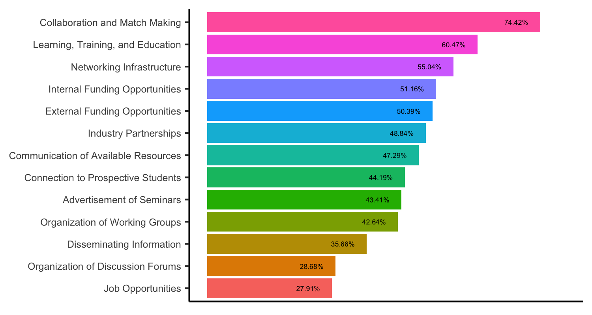

Strengths and Aspirations
Existing Strengths
The University of Utah is a regional leader in education
The University of Utah launched the undergraduate Data Science program in 2019. As of Fall 2022, the program has 76 students and has served as a model for more recently launched programs in the region.
Our faculty are doing innovative data science
- How People Actually Lie With Charts, Alex Lex and Marina Kogan
- Mapper Interactive: A Scalable, Extendable, and Interactive Toolbox for the Visual Exploration of High-Dimensional Data, Youjia Zhou, Nithin Chalapathi, Archit Rathore, Yaodong Zhao, Bei Wang
- Scientific Machine Learning: using machine learning to automatically from data uncover models of physical systems, Shandian Zhe et al.
We are a leader in population data curation and host unique data sets
See our growing list of these resources!
Utah hosts a fast growing digital technology and data science economy
- Genomic data science for diagnostics and gene discovery, supported by the UCGD and CGM on the Health Sciences campus and in the Department of Biology.
- BioHive
- SiliconSlopes
- The Point
The University of Utah is known for multidisciplinary centers of innovation
The University of Utah has a rich history of translational impact
We are aimed to accel in the future
- We are fostering a data science community through activities such as Annual Data Science Day, the UCDS Seminar Series, the DATASET Discovery Workshops, the DELPHI Data Science Education Workshops, and many more.
- We are integrated with local technology companies and are supporting an upcoming event with BioHive.
Future Aspirations
Advance infrastructure for innovation
- Data: The actual data has been collected
- Storage and Computing: To do things with the data
- Interfaces: To enable research on the data (largely missing)
- Responsible: Guidance for how to use infrastructure and models responsibly
Be the next national hub for data science and attract global talent
Supply local talent and transfer innovation to local industry
Data science education is pervasive and available to everyone one campus
Lead in development of data science as a new paradigm for science
Create a frictionless data science community
- We are aware of local expertise, ongoing projects, and are initializing
- We are proud to host an environment of cross-collaboration, where research is truly larger than the sum of the parts
- We are in the process of developing a network of collaborations to showcase this environment
Serve our community based on identified needs
From our initial survey our community of data scientists is looking for collaboration, funding opportunities, education, and connection to students and industry. 